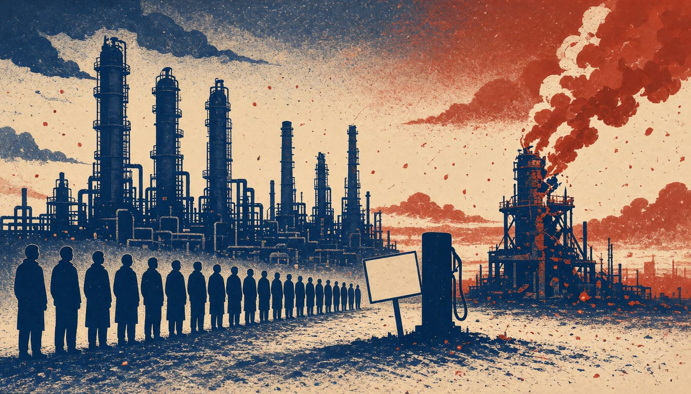

Analyst says Ukrainian strikes put about 55% of Russia's petrol refining out of action
The attack on Lukoil's Volgograd refinery has left 114 apartment buildings in Rostov-on-Don without heating, and Rosneft has reinstated fuel sales limits as queues form at petrol stations.

Ukraine's Defence Forces struck Lukoil's Volgograd oil refinery on the night of 13 November. With this attack, about 55% of Russia's commercial gasoline refining capacity is out of action, analyst Vitaly Vakulenko said. Russia restricts fuel sales in multiple regions. In Rostov-on-Don, 114 apartment buildings were left without heating after the attack.
Ukrainian monitoring projects Exilenova+ and Supernova+ reported queues at petrol stations in the city after the strike. Rosneft, called Russia's largest oil producer by Ukrinform, has reinstated fuel sales limits at its stations across the country. The reinstatement followed a series of drone strikes on oil refineries. Two industry sources said that Ukrainian attacks resuming in late October have cut Russia's refining capacity by about 30%.
The city also introduced a state of emergency in the districts where damage was recorded, Rostov-on-Don head Alexander Skryabin said. Stanislav Marchenko, deputy head of the city administration for housing and utilities, said the buildings in the Oktyabrsky district lost heating. Supply to 79 of them was to return soon, once a halt in water to a boiler house on Gagrinskaya Street was fixed. That leaves 35 buildings still cold from damage to an overhead heating main, with repairs to start after emergency services finish work at the site.
The attack also cost lives. Volgograd Region Governor Andrei Bocharov said four employees in the region's southern industrial zone were killed and two more taken to hospital. The Investigative Committee's spokesperson, Svetlana Petrenko, said investigators opened the case as a terrorist act under Article 205 of the Criminal Code. The case was opened by the Main Investigative Directorate.
The restrictions began in early November, after a brief respite in late October that Kyiv Post attributes to a pause in Ukrainian strikes under US pressure. Ukraine's General Staff calls the Volgograd refinery one of the Russian army's key 'fuel stations' in the south, sending fuel to the front and to airfields that launch strikes on Ukraine. The same General Staff said its forces will keep up systematic measures, under Article 51 of the UN Charter, to make Russia end its aggression.